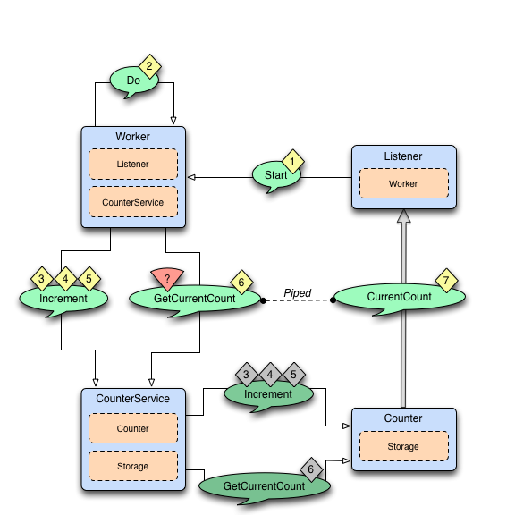

Diagrams of the Fault Tolerance Sample

The above diagram illustrates the normal message flow.
Normal flow:
| Step | Description |
|---|---|
| 1 | The progress Listener starts the work. |
| 2 | The Worker schedules work by sending Do messages periodically to itself |
| 3, 4, 5 | When receiving Do the Worker tells the CounterService to increment the counter, three times. The Increment message is forwarded to the Counter, which updates its counter variable and sends current value to the Storage. |
| 6, 7 | The Worker asks the CounterService of current value of the counter and pipes the result back to the Listener. |

The above diagram illustrates what happens in case of storage failure.
Failure flow:
| Step | Description |
|---|---|
| 1 | The Storage throws StorageException. |
| 2 | The CounterService is supervisor of the Storage and restarts the Storage when StorageException is thrown. |
| 3, 4, 5, 6 | The Storage continues to fail and is restarted. |
| 7 | After 3 failures and restarts within 5 seconds the Storage is stopped by its supervisor, i.e. the CounterService. |
| 8 | The CounterService is also watching the Storage for termination and receives the Terminated message when the Storage has been stopped … |
| 9, 10, 11 | and tells the Counter that there is no Storage. |
| 12 | The CounterService schedules a Reconnect message to itself. |
| 13, 14 | When it receives the Reconnect message it creates a new Storage … |
| 15, 16 | and tells the Counter to use the new Storage |
Full Source Code of the Fault Tolerance Sample
- Scala
-
import akka.actor._ import akka.actor.SupervisorStrategy._ import scala.concurrent.duration._ import akka.util.Timeout import akka.event.LoggingReceive import akka.pattern.{ ask, pipe } import com.typesafe.config.ConfigFactory /** * Runs the sample */ object FaultHandlingDocSample extends App { import Worker._ val config = ConfigFactory.parseString(""" akka.loglevel = "DEBUG" akka.actor.debug { receive = on lifecycle = on } """) val system = ActorSystem("FaultToleranceSample", config) val worker = system.actorOf(Props[Worker], name = "worker") val listener = system.actorOf(Props[Listener], name = "listener") // start the work and listen on progress // note that the listener is used as sender of the tell, // i.e. it will receive replies from the worker worker.tell(Start, sender = listener) } /** * Listens on progress from the worker and shuts down the system when enough * work has been done. */ class Listener extends Actor with ActorLogging { import Worker._ // If we don't get any progress within 15 seconds then the service is unavailable context.setReceiveTimeout(15 seconds) def receive = { case Progress(percent) ⇒ log.info("Current progress: {} %", percent) if (percent >= 100.0) { log.info("That's all, shutting down") context.system.terminate() } case ReceiveTimeout ⇒ // No progress within 15 seconds, ServiceUnavailable log.error("Shutting down due to unavailable service") context.system.terminate() } } object Worker { case object Start case object Do final case class Progress(percent: Double) } /** * Worker performs some work when it receives the `Start` message. * It will continuously notify the sender of the `Start` message * of current ``Progress``. The `Worker` supervise the `CounterService`. */ class Worker extends Actor with ActorLogging { import Worker._ import CounterService._ implicit val askTimeout = Timeout(5 seconds) // Stop the CounterService child if it throws ServiceUnavailable override val supervisorStrategy = OneForOneStrategy() { case _: CounterService.ServiceUnavailable ⇒ Stop } // The sender of the initial Start message will continuously be notified // about progress var progressListener: Option[ActorRef] = None val counterService = context.actorOf(Props[CounterService], name = "counter") val totalCount = 51 import context.dispatcher // Use this Actors' Dispatcher as ExecutionContext def receive = LoggingReceive { case Start if progressListener.isEmpty ⇒ progressListener = Some(sender()) context.system.scheduler.schedule(Duration.Zero, 1 second, self, Do) case Do ⇒ counterService ! Increment(1) counterService ! Increment(1) counterService ! Increment(1) // Send current progress to the initial sender counterService ? GetCurrentCount map { case CurrentCount(_, count) ⇒ Progress(100.0 * count / totalCount) } pipeTo progressListener.get } } object CounterService { final case class Increment(n: Int) sealed abstract class GetCurrentCount case object GetCurrentCount extends GetCurrentCount final case class CurrentCount(key: String, count: Long) class ServiceUnavailable(msg: String) extends RuntimeException(msg) private case object Reconnect } /** * Adds the value received in `Increment` message to a persistent * counter. Replies with `CurrentCount` when it is asked for `CurrentCount`. * `CounterService` supervise `Storage` and `Counter`. */ class CounterService extends Actor { import CounterService._ import Counter._ import Storage._ // Restart the storage child when StorageException is thrown. // After 3 restarts within 5 seconds it will be stopped. override val supervisorStrategy = OneForOneStrategy( maxNrOfRetries = 3, withinTimeRange = 5 seconds) { case _: Storage.StorageException ⇒ Restart } val key = self.path.name var storage: Option[ActorRef] = None var counter: Option[ActorRef] = None var backlog = IndexedSeq.empty[(ActorRef, Any)] val MaxBacklog = 10000 import context.dispatcher // Use this Actors' Dispatcher as ExecutionContext override def preStart(): Unit = { initStorage() } /** * The child storage is restarted in case of failure, but after 3 restarts, * and still failing it will be stopped. Better to back-off than continuously * failing. When it has been stopped we will schedule a Reconnect after a delay. * Watch the child so we receive Terminated message when it has been terminated. */ def initStorage(): Unit = { storage = Some(context.watch(context.actorOf(Props[Storage], name = "storage"))) // Tell the counter, if any, to use the new storage counter foreach { _ ! UseStorage(storage) } // We need the initial value to be able to operate storage.get ! Get(key) } def receive = LoggingReceive { case Entry(k, v) if k == key && counter == None ⇒ // Reply from Storage of the initial value, now we can create the Counter val c = context.actorOf(Props(classOf[Counter], key, v)) counter = Some(c) // Tell the counter to use current storage c ! UseStorage(storage) // and send the buffered backlog to the counter for ((replyTo, msg) ← backlog) c.tell(msg, sender = replyTo) backlog = IndexedSeq.empty case msg: Increment ⇒ forwardOrPlaceInBacklog(msg) case msg: GetCurrentCount ⇒ forwardOrPlaceInBacklog(msg) case Terminated(actorRef) if Some(actorRef) == storage ⇒ // After 3 restarts the storage child is stopped. // We receive Terminated because we watch the child, see initStorage. storage = None // Tell the counter that there is no storage for the moment counter foreach { _ ! UseStorage(None) } // Try to re-establish storage after while context.system.scheduler.scheduleOnce(10 seconds, self, Reconnect) case Reconnect ⇒ // Re-establish storage after the scheduled delay initStorage() } def forwardOrPlaceInBacklog(msg: Any): Unit = { // We need the initial value from storage before we can start delegate to // the counter. Before that we place the messages in a backlog, to be sent // to the counter when it is initialized. counter match { case Some(c) ⇒ c forward msg case None ⇒ if (backlog.size >= MaxBacklog) throw new ServiceUnavailable( "CounterService not available, lack of initial value") backlog :+= (sender() -> msg) } } } object Counter { final case class UseStorage(storage: Option[ActorRef]) } /** * The in memory count variable that will send current * value to the `Storage`, if there is any storage * available at the moment. */ class Counter(key: String, initialValue: Long) extends Actor { import Counter._ import CounterService._ import Storage._ var count = initialValue var storage: Option[ActorRef] = None def receive = LoggingReceive { case UseStorage(s) ⇒ storage = s storeCount() case Increment(n) ⇒ count += n storeCount() case GetCurrentCount ⇒ sender() ! CurrentCount(key, count) } def storeCount(): Unit = { // Delegate dangerous work, to protect our valuable state. // We can continue without storage. storage foreach { _ ! Store(Entry(key, count)) } } } object Storage { final case class Store(entry: Entry) final case class Get(key: String) final case class Entry(key: String, value: Long) class StorageException(msg: String) extends RuntimeException(msg) } /** * Saves key/value pairs to persistent storage when receiving `Store` message. * Replies with current value when receiving `Get` message. * Will throw StorageException if the underlying data store is out of order. */ class Storage extends Actor { import Storage._ val db = DummyDB def receive = LoggingReceive { case Store(Entry(key, count)) ⇒ db.save(key, count) case Get(key) ⇒ sender() ! Entry(key, db.load(key).getOrElse(0L)) } } object DummyDB { import Storage.StorageException private var db = Map[String, Long]() @throws(classOf[StorageException]) def save(key: String, value: Long): Unit = synchronized { if (11 <= value && value <= 14) throw new StorageException("Simulated store failure " + value) db += (key -> value) } @throws(classOf[StorageException]) def load(key: String): Option[Long] = synchronized { db.get(key) } } - Java
-
import java.util.ArrayList; import java.util.HashMap; import java.util.List; import java.util.Map; import java.time.Duration; import akka.actor.*; import akka.dispatch.Mapper; import akka.event.LoggingReceive; import akka.japi.pf.DeciderBuilder; import akka.pattern.Patterns; import akka.util.Timeout; import com.typesafe.config.Config; import com.typesafe.config.ConfigFactory; import static akka.japi.Util.classTag; import static akka.actor.SupervisorStrategy.restart; import static akka.actor.SupervisorStrategy.stop; import static akka.actor.SupervisorStrategy.escalate; import static akka.pattern.Patterns.pipe; import static jdocs.actor.FaultHandlingDocSample.WorkerApi.*; import static jdocs.actor.FaultHandlingDocSample.CounterServiceApi.*; import static jdocs.actor.FaultHandlingDocSample.CounterApi.*; import static jdocs.actor.FaultHandlingDocSample.StorageApi.*; public class FaultHandlingDocSample { /** Runs the sample */ public static void main(String[] args) { Config config = ConfigFactory.parseString( "akka.loglevel = \"DEBUG\"\n" + "akka.actor.debug {\n" + " receive = on\n" + " lifecycle = on\n" + "}\n"); ActorSystem system = ActorSystem.create("FaultToleranceSample", config); ActorRef worker = system.actorOf(Props.create(Worker.class), "worker"); ActorRef listener = system.actorOf(Props.create(Listener.class), "listener"); // start the work and listen on progress // note that the listener is used as sender of the tell, // i.e. it will receive replies from the worker worker.tell(Start, listener); } /** * Listens on progress from the worker and shuts down the system when enough work has been done. */ public static class Listener extends AbstractLoggingActor { @Override public void preStart() { // If we don't get any progress within 15 seconds then the service // is unavailable getContext().setReceiveTimeout(Duration.ofSeconds(15)); } @Override public Receive createReceive() { return LoggingReceive.create( receiveBuilder() .match( Progress.class, progress -> { log().info("Current progress: {} %", progress.percent); if (progress.percent >= 100.0) { log().info("That's all, shutting down"); getContext().getSystem().terminate(); } }) .matchEquals( ReceiveTimeout.getInstance(), x -> { // No progress within 15 seconds, ServiceUnavailable log().error("Shutting down due to unavailable service"); getContext().getSystem().terminate(); }) .build(), getContext()); } } public interface WorkerApi { public static final Object Start = "Start"; public static final Object Do = "Do"; public static class Progress { public final double percent; public Progress(double percent) { this.percent = percent; } public String toString() { return String.format("%s(%s)", getClass().getSimpleName(), percent); } } } /** * Worker performs some work when it receives the Start message. It will continuously notify the * sender of the Start message of current Progress. The Worker supervise the CounterService. */ public static class Worker extends AbstractLoggingActor { final Timeout askTimeout = Timeout.create(Duration.ofSeconds(5)); // The sender of the initial Start message will continuously be notified // about progress ActorRef progressListener; final ActorRef counterService = getContext().actorOf(Props.create(CounterService.class), "counter"); final int totalCount = 51; // Stop the CounterService child if it throws ServiceUnavailable private static final SupervisorStrategy strategy = new OneForOneStrategy( DeciderBuilder.match(ServiceUnavailable.class, e -> stop()) .matchAny(o -> escalate()) .build()); @Override public SupervisorStrategy supervisorStrategy() { return strategy; } @Override public Receive createReceive() { return LoggingReceive.create( receiveBuilder() .matchEquals( Start, x -> progressListener == null, x -> { progressListener = getSender(); getContext() .getSystem() .scheduler() .schedule( Duration.ZERO, Duration.ofSeconds(1L), getSelf(), Do, getContext().getDispatcher(), null); }) .matchEquals( Do, x -> { counterService.tell(new Increment(1), getSelf()); counterService.tell(new Increment(1), getSelf()); counterService.tell(new Increment(1), getSelf()); // Send current progress to the initial sender pipe( Patterns.ask(counterService, GetCurrentCount, askTimeout) .mapTo(classTag(CurrentCount.class)) .map( new Mapper<CurrentCount, Progress>() { public Progress apply(CurrentCount c) { return new Progress(100.0 * c.count / totalCount); } }, getContext().dispatcher()), getContext().dispatcher()) .to(progressListener); }) .build(), getContext()); } } public interface CounterServiceApi { public static final Object GetCurrentCount = "GetCurrentCount"; public static class CurrentCount { public final String key; public final long count; public CurrentCount(String key, long count) { this.key = key; this.count = count; } public String toString() { return String.format("%s(%s, %s)", getClass().getSimpleName(), key, count); } } public static class Increment { public final long n; public Increment(long n) { this.n = n; } public String toString() { return String.format("%s(%s)", getClass().getSimpleName(), n); } } public static class ServiceUnavailable extends RuntimeException { private static final long serialVersionUID = 1L; public ServiceUnavailable(String msg) { super(msg); } } } /** * Adds the value received in Increment message to a persistent counter. Replies with CurrentCount * when it is asked for CurrentCount. CounterService supervise Storage and Counter. */ public static class CounterService extends AbstractLoggingActor { // Reconnect message static final Object Reconnect = "Reconnect"; private static class SenderMsgPair { final ActorRef sender; final Object msg; SenderMsgPair(ActorRef sender, Object msg) { this.msg = msg; this.sender = sender; } } final String key = getSelf().path().name(); ActorRef storage; ActorRef counter; final List<SenderMsgPair> backlog = new ArrayList<>(); final int MAX_BACKLOG = 10000; // Restart the storage child when StorageException is thrown. // After 3 restarts within 5 seconds it will be stopped. private static final SupervisorStrategy strategy = new OneForOneStrategy( 3, Duration.ofSeconds(5), DeciderBuilder.match(StorageException.class, e -> restart()) .matchAny(o -> escalate()) .build()); @Override public SupervisorStrategy supervisorStrategy() { return strategy; } @Override public void preStart() { initStorage(); } /** * The child storage is restarted in case of failure, but after 3 restarts, and still failing it * will be stopped. Better to back-off than continuously failing. When it has been stopped we * will schedule a Reconnect after a delay. Watch the child so we receive Terminated message * when it has been terminated. */ void initStorage() { storage = getContext().watch(getContext().actorOf(Props.create(Storage.class), "storage")); // Tell the counter, if any, to use the new storage if (counter != null) counter.tell(new UseStorage(storage), getSelf()); // We need the initial value to be able to operate storage.tell(new Get(key), getSelf()); } @Override public Receive createReceive() { return LoggingReceive.create( receiveBuilder() .match( Entry.class, entry -> entry.key.equals(key) && counter == null, entry -> { // Reply from Storage of the initial value, now we can create the Counter final long value = entry.value; counter = getContext().actorOf(Props.create(Counter.class, key, value)); // Tell the counter to use current storage counter.tell(new UseStorage(storage), getSelf()); // and send the buffered backlog to the counter for (SenderMsgPair each : backlog) { counter.tell(each.msg, each.sender); } backlog.clear(); }) .match( Increment.class, increment -> { forwardOrPlaceInBacklog(increment); }) .matchEquals( GetCurrentCount, gcc -> { forwardOrPlaceInBacklog(gcc); }) .match( Terminated.class, o -> { // After 3 restarts the storage child is stopped. // We receive Terminated because we watch the child, see initStorage. storage = null; // Tell the counter that there is no storage for the moment counter.tell(new UseStorage(null), getSelf()); // Try to re-establish storage after while getContext() .getSystem() .scheduler() .scheduleOnce( Duration.ofSeconds(10), getSelf(), Reconnect, getContext().getDispatcher(), null); }) .matchEquals( Reconnect, o -> { // Re-establish storage after the scheduled delay initStorage(); }) .build(), getContext()); } void forwardOrPlaceInBacklog(Object msg) { // We need the initial value from storage before we can start delegate to // the counter. Before that we place the messages in a backlog, to be sent // to the counter when it is initialized. if (counter == null) { if (backlog.size() >= MAX_BACKLOG) throw new ServiceUnavailable("CounterService not available," + " lack of initial value"); backlog.add(new SenderMsgPair(getSender(), msg)); } else { counter.forward(msg, getContext()); } } } public interface CounterApi { public static class UseStorage { public final ActorRef storage; public UseStorage(ActorRef storage) { this.storage = storage; } public String toString() { return String.format("%s(%s)", getClass().getSimpleName(), storage); } } } /** * The in memory count variable that will send current value to the Storage, if there is any * storage available at the moment. */ public static class Counter extends AbstractLoggingActor { final String key; long count; ActorRef storage; public Counter(String key, long initialValue) { this.key = key; this.count = initialValue; } @Override public Receive createReceive() { return LoggingReceive.create( receiveBuilder() .match( UseStorage.class, useStorage -> { storage = useStorage.storage; storeCount(); }) .match( Increment.class, increment -> { count += increment.n; storeCount(); }) .matchEquals( GetCurrentCount, gcc -> { getSender().tell(new CurrentCount(key, count), getSelf()); }) .build(), getContext()); } void storeCount() { // Delegate dangerous work, to protect our valuable state. // We can continue without storage. if (storage != null) { storage.tell(new Store(new Entry(key, count)), getSelf()); } } } public interface StorageApi { public static class Store { public final Entry entry; public Store(Entry entry) { this.entry = entry; } public String toString() { return String.format("%s(%s)", getClass().getSimpleName(), entry); } } public static class Entry { public final String key; public final long value; public Entry(String key, long value) { this.key = key; this.value = value; } public String toString() { return String.format("%s(%s, %s)", getClass().getSimpleName(), key, value); } } public static class Get { public final String key; public Get(String key) { this.key = key; } public String toString() { return String.format("%s(%s)", getClass().getSimpleName(), key); } } public static class StorageException extends RuntimeException { private static final long serialVersionUID = 1L; public StorageException(String msg) { super(msg); } } } /** * Saves key/value pairs to persistent storage when receiving Store message. Replies with current * value when receiving Get message. Will throw StorageException if the underlying data store is * out of order. */ public static class Storage extends AbstractLoggingActor { final DummyDB db = DummyDB.instance; @Override public Receive createReceive() { return LoggingReceive.create( receiveBuilder() .match( Store.class, store -> { db.save(store.entry.key, store.entry.value); }) .match( Get.class, get -> { Long value = db.load(get.key); getSender() .tell( new Entry(get.key, value == null ? Long.valueOf(0L) : value), getSelf()); }) .build(), getContext()); } } public static class DummyDB { public static final DummyDB instance = new DummyDB(); private final Map<String, Long> db = new HashMap<String, Long>(); private DummyDB() {} public synchronized void save(String key, Long value) throws StorageException { if (11 <= value && value <= 14) throw new StorageException("Simulated store failure " + value); db.put(key, value); } public synchronized Long load(String key) throws StorageException { return db.get(key); } } }